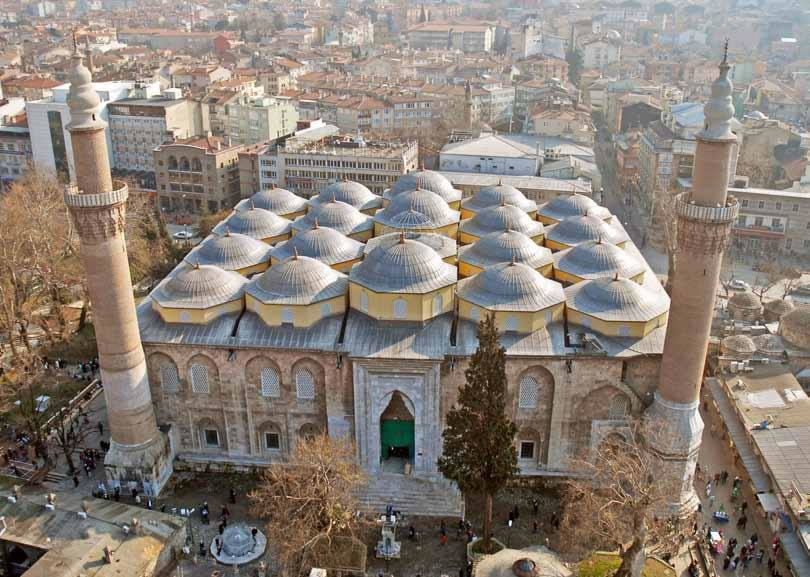
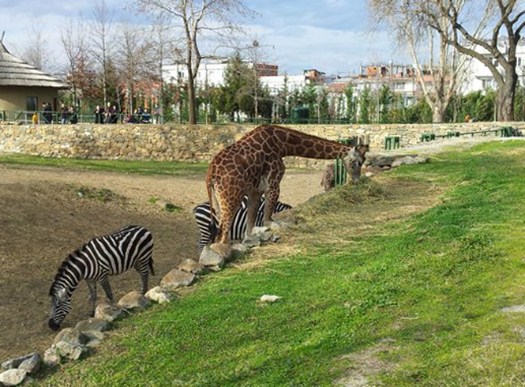

Мечеть расположена в самом центре Старого города, около базара. До сих пор Большая мечеть Улу Джами является образцом при строительстве новых мечетей на территории всей страны..Это первое многокупольное сооружение в Османской империи, выполненное в арабском стиле. Тут есть все, что должно быть в османских мечетях – и фонтан для религиозных омовений, и ковры на полу, и надписи из Корана на стенах.
История гласит,что неоднократно на сооружение Большой мечети Улу
Джами оказывалось разрушительное воздействие.
Впервые оно было повреждено при нашествии Тимура.
Позднее здание сильно пострадало во время землетрясения в 1855 году.
В этот раз его восстановлением занимался архитектор из Франции.
Им были внесены несвойственные ранней османской архитектуре элементы барокко,
которые нашли отражение в украшениях минаретов и в оформлении надписей.

Зоопарк Бурсы
Зоопарк, размещенный в Бурсе , открыт для посетителей и знакомит их со своими обитателями.В вольерах проживают крокодилы, жирафы, львы, зебры, страусы, леопарды, обезьяны и другие животные. Так же в зоопарке есть турецкая деревушка, где живут медведи, волки, хищные и водоплавающие птицы, лама, дикий осел и верблюд. Здесь же можно понаблюдать за домашними птицами, фазанами, голубями и попугаями, а так же посмотреть на домашних животных – коров, коз и овец. На территории парка открыты кафе и рестораны, а для детей есть игровая зона.

Зеленая мечеть
Зеленая мечеть построена в период с 1412 по 1419 год. Считается одной из самых богато-украшенных в Бурсе:
фасад отделан белым мрамором, а внутри отделка из синего и зеленого кафеля.Мечеть открыта круглые сутки, но посещать туристам ее можно только в период, когда не проходит намаз (молитва),
который бывает пять раз в день.Мечеть входит в комплекс, включающий в себя медресе, усыпальницу, богадельню. Фасад оформлен белым мрамором, а молитвенный зал зелёным фаянсом. Художественное звучание памятника усиливают резные двери из дерева, мраморные колонны, витражи, изразцы.
На территории мечети находится Зеленая усыпальница султана Мехмеда I. Она возвышается среди кипарисов.
Построили гробницу в 1420-1421 годах. Изнутри строение оформлено зеленой плиткой.